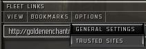
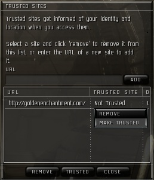

How to make Fleet Links trusted
If you clicked "Yes" after checking the "Don't ask me about this site again"
checkbox, EVE marks the site as permanatly untrsuted.
To fix this, click on the "Options" menu in the in game browser and select "Trusted
Sites":

One there, right click on the "http://goldenenchantment.com/" entry and select "Make
Trusted".

That should fix it.
Feel free contact WoogyDude in game or via GoonFleet private message if you have any questions or comments.